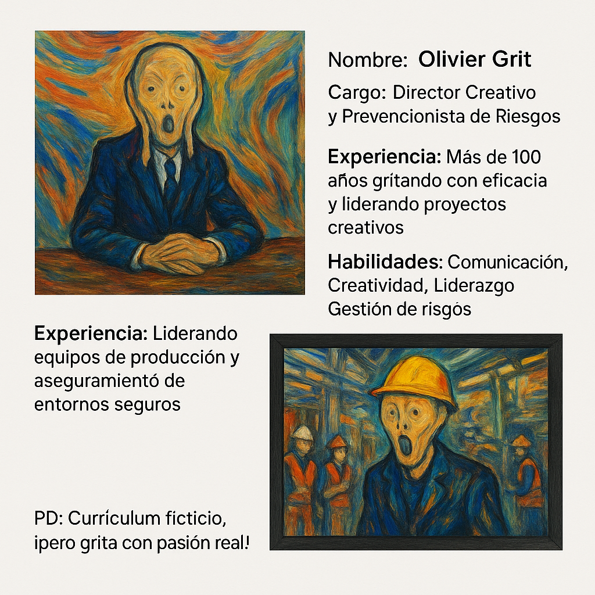

Optimización del Currículum Web: Tu Marca Personal Digital
En la era digital, tu currículum es mucho más que un simple documento; es tu carta de presentación interactiva al mundo profesional. Nuestro servicio de Optimización del Currículum Web transforma tu perfil tradicional en una experiencia online atractiva, dinámica y altamente efectiva, diseñada para captar la atención de reclutadores y destacar tus fortalezas de manera única.
¿Por qué un Currículum Web?
Un CV web te permite ir más allá de las limitaciones del papel. Puedes integrar elementos multimedia, enlaces directos a tus proyectos, testimonios, y presentar tu trayectoria de una forma visualmente impactante y fácil de navegar. Es tu oportunidad de controlar tu narrativa profesional y mostrar tu personalidad y creatividad.
Características Clave de Nuestros CVs Web:
- Diseño Único y Moderno: Creamos una estética personalizada que refleja tu identidad profesional y sector.
- Totalmente Responsivo: Perfecta visualización en cualquier dispositivo: móviles, tablets y ordenadores de escritorio.
- Secciones Interactivas: Galerías de proyectos, líneas de tiempo de experiencia, habilidades con barras de progreso, y más.
- Multimedia Integrada: Posibilidad de incluir videos de presentación, portfolios de imágenes, o audios.
- Optimización SEO Básica: Ayudamos a que tu perfil sea más visible para búsquedas relevantes.
- Fácil de Actualizar: Te proporcionamos las herramientas o el soporte para mantener tu información al día sin complicaciones.
- Dominio Personalizado (Opcional): Aloja tu CV en una dirección web propia (ej. tunombre.com).
- Análisis y Seguimiento (Opcional): Integra herramientas para saber quién visita tu perfil.
Beneficios para ti:
Invertir en un currículum web profesional te posiciona un paso adelante en el competitivo mercado laboral. Demuestra proactividad, manejo de herramientas digitales y una presentación cuidada y moderna. Es una herramienta poderosa para networking, búsqueda de empleo o simplemente para consolidar tu marca personal online.
¿Listo para llevar tu presentación profesional al siguiente nivel? Contáctanos y descubre cómo un CV web de Estudio Fractal puede abrirte nuevas puertas.
Solicitar este Servicio